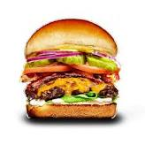

Burger

Description:
Burger is a delicious and popular food that is very easy to make that require very simple ingredients.
It is healthy and very affordable and can feed the whole family.
Ingredients:
- 1 pound ground beef
- Salt and pepper, to taste
- 4 hamburger buns
- Optional: lettuce, tomato, onion, pickles, ketchup, mustard, mayonnaise
Steps:
- Preheat a grill to medium-high heat.
- Divide the ground beef into four equal portions. Shape each portion into a patty about 1/2-inch thick.
- Sprinkle both sides of each patty with salt and pepper.
- Place the patties on the grill and cook for about 3-4 minutes on each side, or until the desired level of doneness is reached.
- During the last minute of cooking, place a slice of cheese on top of each patty, if using.
- Assemble the hamburgers by placing the cooked patty on the bottom bun, followed by any desired toppings and the top bun.
- Serve the hamburgers hot and enjoy!
Home |
Top